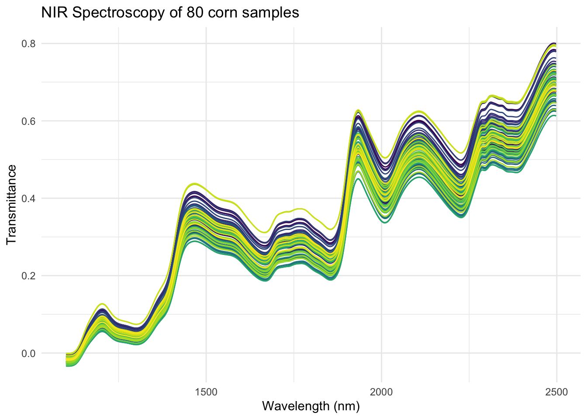
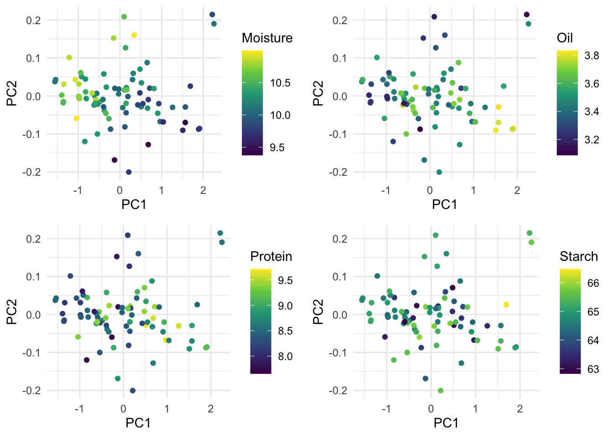
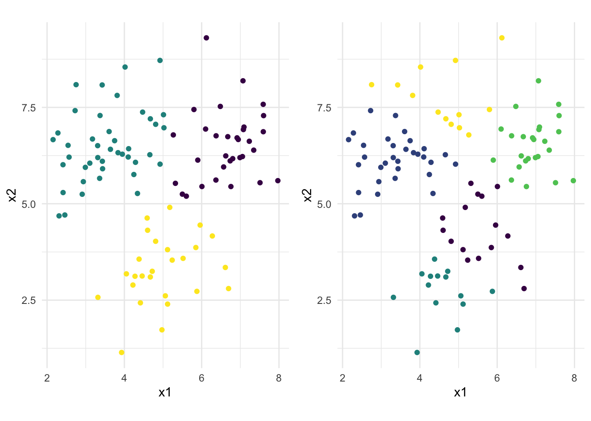

Chapter 6 Unsupervised learning
6.1 Book unsupervised learning PCA
The goal of unsupervised learning is to discover interesting relations among the X’s.
6.2 Unsupervised learning practical I
6.2.1 Exercise 1
6.2.2 Exercise 2
df_scaled <- df %>%
dplyr::select(-sex) %>%
scale() %>%
as_tibble()
# optionally, we can also compare datasets to see what happened.
bubble_plot <- function(df) {
df %>%
gather(key = Question, value = Answer) %>%
mutate(Question = str_to_lower(Question)) %>%
ggplot(aes(x = Question, y = Answer)) +
geom_count(colour = "#00008B") +
theme_minimal() +
theme(axis.text.x = element_text(angle = 90, hjust = 1))
}
# Unscaled
df %>%
dplyr::select(-sex) %>%
bubble_plot() +
ggtitle("Unscaled")
6.2.4 Exercise 4
## Importance of components:
## PC1 PC2 PC3 PC4 PC5 PC6 PC7
## Standard deviation 1.990 1.7203 1.2231 1.13377 1.08634 1.01829 0.93155
## Proportion of Variance 0.198 0.1480 0.0748 0.06427 0.05901 0.05185 0.04339
## Cumulative Proportion 0.198 0.3459 0.4207 0.48501 0.54402 0.59586 0.63925
## PC8 PC9 PC10 PC11 PC12 PC13 PC14
## Standard deviation 0.88987 0.8843 0.87713 0.80285 0.80101 0.74269 0.72226
## Proportion of Variance 0.03959 0.0391 0.03847 0.03223 0.03208 0.02758 0.02608
## Cumulative Proportion 0.67884 0.7179 0.75641 0.78863 0.82072 0.84829 0.87438
## PC15 PC16 PC17 PC18 PC19 PC20
## Standard deviation 0.69182 0.6885 0.66436 0.6418 0.59656 0.59211
## Proportion of Variance 0.02393 0.0237 0.02207 0.0206 0.01779 0.01753
## Cumulative Proportion 0.89831 0.9220 0.94408 0.9647 0.98247 1.00000Together, the first two components explain about 35% of the total variance, and we would need 5 components to explain 50% of the variance in the data.
6.2.5 Exercise 5
## BIGF13
## 0.3182789## [1] 0.6333226The variable BIGF13 loads highest on the first factor.
6.2.6 Exercise 6
as_tibble(pca_mod$x) %>%
ggplot(aes(x = PC1, y = PC2, colour = df$sex)) +
geom_point() +
theme_minimal() +
scale_colour_viridis_d()
6.2.9 Exercise 9
##
## Principal inertias (eigenvalues):
##
## dim value % cum% scree plot
## 1 0.050916 34.6 34.6 *********
## 2 0.037005 25.2 59.8 ******
## 3 0.021217 14.4 74.2 ****
## 4 0.013919 9.5 83.7 **
## 5 0.008329 5.7 89.3 *
## 6 0.006925 4.7 94.1 *
## 7 0.003570 2.4 96.5 *
## 8 0.002149 1.5 97.9
## 9 0.001293 0.9 98.8
## 10 0.001119 0.8 99.6
## 11 0.000614 0.4 100.0
## -------- -----
## Total: 0.147056 100.0
##
##
## Rows:
## name mass qlt inr k=1 cor ctr k=2 cor ctr
## 1 | CtSt | 76 175 37 | -4 0 0 | -113 175 26 |
## 2 | Exo | 49 972 288 | -820 775 645 | 414 198 226 |
## 3 | SnpD | 155 252 71 | 61 55 11 | -115 198 56 |
## 4 | Vngl | 44 385 123 | -237 136 48 | -320 249 122 |
## 5 | TmMG | 78 290 24 | 8 1 0 | -114 289 27 |
## 6 | IggP | 61 156 27 | 63 62 5 | -77 94 10 |
## 7 | BryW | 73 410 40 | -107 141 16 | -148 269 43 |
## 8 | GrtD | 57 55 35 | 68 51 5 | -20 4 1 |
## 9 | FlRd | 149 397 84 | 171 352 86 | 62 46 15 |
## 10 | JhnM | 95 188 49 | -118 185 26 | -17 4 1 |
## 11 | JnsJ | 109 845 200 | 268 266 154 | 395 579 461 |
## 12 | Extr | 53 200 20 | -53 49 3 | -92 151 12 |
##
## Columns:
## name mass qlt inr k=1 cor ctr k=2 cor ctr
## 1 | i | 258 203 31 | 57 186 16 | -17 17 2 |
## 2 | love | 39 475 69 | -352 475 94 | 1 0 0 |
## 3 | you | 206 956 93 | -234 825 223 | 93 131 49 |
## 4 | me | 84 494 32 | 165 493 45 | 7 1 0 |
## 5 | we | 33 508 67 | 13 1 0 | -386 507 135 |
## 6 | to | 113 667 68 | 131 192 38 | -205 475 129 |
## 7 | be | 36 529 16 | 48 35 2 | -178 494 31 |
## 8 | do | 22 250 11 | 123 198 7 | -63 52 2 |
## 9 | go | 22 830 70 | -544 640 130 | 297 190 53 |
## 10 | no | 35 852 97 | 321 253 71 | 494 599 231 |
## 11 | baby | 23 799 84 | 417 329 80 | 499 471 157 |
## 12 | hert | 8 668 31 | -599 666 59 | 25 1 0 |
## 13 | life | 12 350 52 | -105 17 3 | -458 333 69 |
## 14 | down | 21 395 36 | 313 392 41 | 28 3 0 |
## 15 | wrld | 8 245 11 | 45 10 0 | -225 235 11 |
## 16 | over | 5 159 11 | 170 93 3 | -143 66 3 |
## 17 | eyes | 5 205 21 | -12 0 0 | -349 205 17 |
## 18 | bad | 3 218 9 | 98 23 1 | -281 195 7 |
## 19 | away | 10 590 29 | -512 590 49 | 12 0 0 |
## 20 | tgth | 2 803 18 | -904 750 38 | 240 53 4 |
## 21 | tngh | 3 132 21 | 312 111 7 | -137 21 2 |
## 22 | evry | 3 623 12 | -503 506 17 | 242 117 5 |
## 23 | live | 5 348 24 | -53 4 0 | -491 344 32 |
## 24 | make | 13 334 20 | 261 303 17 | -83 31 2 |
## 25 | back | 15 62 19 | 108 61 3 | -7 0 0 |
## 26 | hey | 13 686 50 | 466 391 57 | 405 295 59 |The first two axes explain nearly 60% of the variation in the data. The principal coordinates for the first two dimensions (k = 1 and k = 2) show that the word “love†has no correlation or a contribution with/to the second dimension. All else being equal, if two artists differ on dimension 2, the artist with a lower score on this dimension uses the word love relatively more often.
6.2.10 Exercise 10

gg_ca <-
rbind(ca_mod$rowcoord[, 1:2], ca_mod$colcoord[, 1:2]) %>%
as_tibble() %>%
mutate(name = c(rownames(songs_ca), colnames(songs_ca)),
type = c(rep("row", 12), rep("col", 26)))
gg_ca %>%
ggplot(aes(x = Dim1, y = Dim2, shape = type, colour = type, label = name)) +
geom_point() +
geom_text(hjust = 0, nudge_x = 0.05) +
coord_fixed() +
theme_minimal() +
theme(legend.position = "none") +
labs(x = "Dimension 1", y = "Dimension 2",
title = "CA of popular words in songs")
6.2.11 Exercise 11
Exo is a k-pop band. Janis Joplin was born in 1943 (and a member of the infamous 27 club), so her lyrics are from a different period than the other artists.
6.2.12 Exercise 12
It would look completely different: correspondence analysis maps rows and columns together. So the words will be in different places. For example, if the artist “high school musical†would be in the sample, it would separate itself from the other artists because the word “together†is used a lot. Consequently, the word “together†would appear near the artist. The same will happen with Cole Porter and “loveâ€.
6.2.13 Exercise 13
load("data/corn.RData")
t(corn[, -c(1:4)]) %>%
as_tibble %>%
gather(key = corn, value = signal) %>%
mutate(wavelength = rep(seq(1100, 2498, 2), 80)) %>%
ggplot(aes(x = wavelength, y = signal, colour = corn)) +
geom_line() +
theme_minimal() +
scale_colour_viridis_d(guide = "none") +
labs(x = "Wavelength (nm)",
y = "Transmittance",
title = "NIR Spectroscopy of 80 corn samples")## Warning: The `x` argument of `as_tibble.matrix()` must have unique column names if `.name_repair` is omitted as of tibble 2.0.0.
## Using compatibility `.name_repair`.
## This warning is displayed once every 8 hours.
## Call `lifecycle::last_warnings()` to see where this warning was generated.
6.2.14 Exercise 14
# Perform svd-pca
x_scaled <- scale(corn[, -c(1:4)], scale = FALSE)
svd_corn <- svd(x_scaled)
pc_scores <- svd_corn$u %*% diag(svd_corn$d)
# Plot first two principal components versus the corn properties
ggcorn <-
corn[, 1:4] %>%
bind_cols(tibble(PC1 = pc_scores[, 1],
PC2 = pc_scores[, 2],
PC5 = pc_scores[, 5],
PC6 = pc_scores[, 6]))
cowplot::plot_grid(
ggcorn %>%
ggplot(aes(x = PC1, y = PC2, colour = Moisture)) +
geom_point() +
theme_minimal() +
scale_colour_viridis_c(),
ggcorn %>%
ggplot(aes(x = PC1, y = PC2, colour = Oil)) +
geom_point() +
theme_minimal() +
scale_colour_viridis_c(),
ggcorn %>%
ggplot(aes(x = PC1, y = PC2, colour = Protein)) +
geom_point() +
theme_minimal() +
scale_colour_viridis_c(),
ggcorn %>%
ggplot(aes(x = PC1, y = PC2, colour = Starch)) +
geom_point() +
theme_minimal() +
scale_colour_viridis_c()
)
Moisture and oil seem to have a strong relation with the first two PCs, and their high values are on opposite sides. The high/low values for protein and starch seem more randomly ordered in these plots.
cowplot::plot_grid(
ggcorn %>%
ggplot(aes(x = PC5, y = PC6, colour = Moisture)) +
geom_point() +
theme_minimal() +
scale_colour_viridis_c(),
ggcorn %>%
ggplot(aes(x = PC5, y = PC6, colour = Oil)) +
geom_point() +
theme_minimal() +
scale_colour_viridis_c(),
ggcorn %>%
ggplot(aes(x = PC5, y = PC6, colour = Protein)) +
geom_point() +
theme_minimal() +
scale_colour_viridis_c(),
ggcorn %>%
ggplot(aes(x = PC5, y = PC6, colour = Starch)) +
geom_point() +
theme_minimal() +
scale_colour_viridis_c()
)
Here, it’s protein and starch that relate more to the PCs. They too are opposites in these samples.
6.3 Unsupervised learning practical II
6.3.1 Exercise 1
dat <- read_csv("data/clusterdata.csv")
set.seed(123)
dat %>%
ggplot(aes(x = x1, y = x2)) +
geom_point() +
coord_fixed() +
theme_minimal()
6.3.3 Exercise 3
cowplot::plot_grid(
# K = 3 plot
dat %>%
ggplot(aes(x = x1, y = x2, colour = factor(kmeans3$cluster))) +
geom_point() +
coord_fixed() +
theme_minimal() +
scale_colour_viridis_d(guide = "none"),
# K = 5 plot
dat %>%
ggplot(aes(x = x1, y = x2, colour = factor(kmeans5$cluster))) +
geom_point() +
coord_fixed() +
theme_minimal() +
scale_colour_viridis_d(guide = "none")
)
6.3.4 Exercise 4
6.3.5 Exercise 5
6.3.6 Exercise 6
Compare dendrograms.
6.3.7 Exercise 7
Gives three means clustering the same result as hierarchical clustering with a cutoff at three?
# first, let's make two factors with congruent labels for the observations
hclust_fac <- factor(cutree(hclust1, k = 3), labels = c("a", "b", "c"))
kmeans_fac <- factor(kmeans3$cluster, labels = c("a", "b", "c"))
# then we can check whether the labels are the same
same_clust <- hclust_fac == kmeans_fac
all(same_clust)## [1] FALSENo it doesn’t.
## [1] 6# we could also make a visual comparison of the differences
ggplot(dat, aes(x = x1, y = x2)) +
geom_point(size = 6, colour = ifelse(same_clust, "#00000000", "#00000030")) +
geom_point(aes(colour = hclust_fac), position = position_nudge(-0.07)) +
geom_point(aes(colour = kmeans_fac), position = position_nudge(0.07)) +
scale_colour_viridis_d() +
coord_fixed() +
theme_minimal() +
theme()